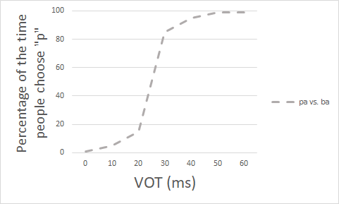

In the previous parts of this module you we learned about categorical perception. (If you want to read more about this topic, see the following readings—organized roughly from
simplest to most advanced:
Harnad, S. (2003). Categorical perception. Encyclopedia of Cognitive Science. Nature Publishing Group/Macmillan.
Liberman, A., Cooper, F., Shankweiler, D., & Studdert-Kennedy, M. (1967). Perception of the speech code. Psychological Review, 74, 431-461.
Remember the pattern of results we found in a categorical experiment. When voice onset time is very short, people don't often think the sound is "pa". As voice onset time gets higher,
that doesn't change much. When voice onset time reaches a certain point (a categorical boundary), suddenly things change; the line shoots up, and people almost always think the sound is "pa".
This pattern is shown in the graph below:

Here I am assuming that we are doing this experiment with English speakers.
Now what if I did this same experiment, but instead of using sounds like "ba" and "pa", I used sounds like "because" and "pecause"? Again, I can take this sound, and systematically edit
the VOT: I can have this word pronounced with a 60 ms VOT, a 50 ms VOT, a 40 ms VOT, etc. How do you think the results might differ? Think about this, and then answer the reflection question below.
Draw a graph of the results you'd predict for the situation I described (an experiment with "because" vs. "pecause" in English). For reference, also include the line showing the results for
"ba"/"pa". (You can use the graph I provided at the beginning of this 'test', and you can add your line on to that graph.)
When you have finished these activities, continue to the next section of the module:
"The Ganong effect".